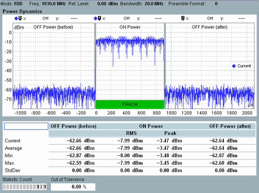

This single-preamble view shows a diagram and a statistical overview of related power results.

The diagram shows the UE output power vs. time, sampled with 48 Ts (1.5625 µs). The trace covers the range from -1100 µs to +2098.4375 µs relative to the start of the preamble.
The table below the diagram shows ON power and OFF power values. According to 3GPP, the ON power is the mean UE output power over the preamble, i.e. over the PRACH measurement period - see Table "Measurement period for ON power". In addition to this value, the table lists also the peak power within the measurement period. The ON power measurement period is marked by a green horizontal bar in the diagram.
The OFF power is the mean power in one subframe (1 ms) before and after the ON power measurement period. A transient period of 20 µs next to the ON power measurement period is excluded. The transient period is indicated by gray vertical bars in the diagram.
Preamble format | Measurement period ON power (µs) |
|---|---|
0 | 903.1 |
1 | 1484.4 |
2 | 1803.1 |
3 | 2284.4 |
4 | 147.9 |
Signal configuration Ensure that two subframes before the preamble and two subframes after the preamble are off (OFF, OFF, preamble, OFF, OFF). This configuration guarantees that the measured "OFF Power (before)" is not falsified by power contributions of a preceding ON subframe ramped down too slowly. And that the "OFF Power (after)" is not falsified by a subsequent ON subframe ramped up too early. You can check the first 100 µs of the trace to ensure that the second subframe before the preamble is off. For preamble formats 0 and 4, you can also check the end of the trace to ensure that the second subframe after the preamble is off. |
For additional information, refer to "Common View Elements".